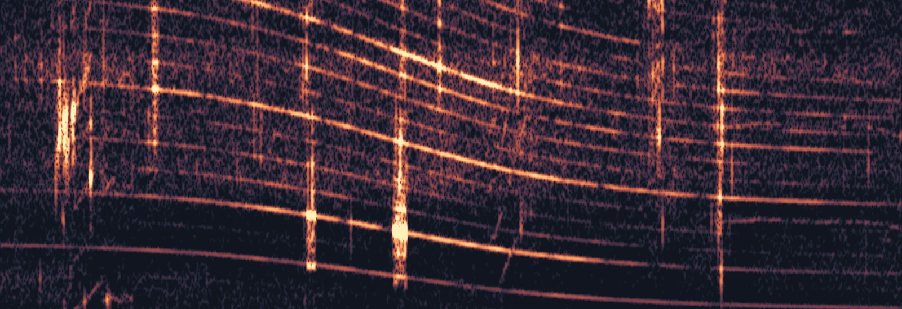

Aircraft audio
Dopplergeist
Can a recording tell you where the microphone was? DOPPLERGEIST follows the change in pitch as a plane passes overhead and compares it with historical flight tracks.

Pick a print to open one of my experiments.
I’m Cinna. I study mathematics and computer science at IMSA. I’ve programmed for our FIRST Robotics team, played varsity Scholastic Bowl, and helped teach Elements of Computing Systems.
I also work on particle physics. Nathan Catlett and I studied how to estimate the background in a search for a doubly charged Higgs boson when simulations run thin at high masses.
Our research abstractAircraft audio
Can a recording tell you where the microphone was? DOPPLERGEIST follows the change in pitch as a plane passes overhead and compares it with historical flight tracks.

Algorithms
I work on how much time a deterministic algorithm needs to factor an integer. The repository includes a Lean proof of a running-time bound. Try a small example of factorization here.
Read the proofHardware
For my computing systems capstone, I extended the Hack CPU with a two-stage pipeline, a global-history branch predictor, and fused instructions. Start with one instruction the original Hack machine understands.
Campus software
A school schedule is easier to read when you can see which room you need for each class period. I built a Rust tool that turns an IMSA schedule into a day-by-day room list.
Open a sample week to see how classes repeat on letter days. You can replace it with your own schedule.
Load the example weekGraph theory
Does a graph with 99 vertices satisfy Conway’s neighbor-count rules? The question is open. My research looks at structures that would have to fit inside such a graph, including 3 × 3 rook grids.
Choose a square. A rook can reach any other square in the same row or column in one move.